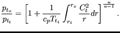
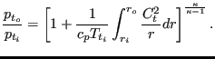

A network element is characterized by a type of fluid section. It has to be specified on the *FLUID SECTION card unless the analysis is a pure thermomechanical calculation.
Typical material properties needed for a liquid network are the density  (temperature dependent, cf. the *DENSITY card), the
heat capacity  and the dynamic viscosity
(temperature dependent, cf. the *DENSITY card), the
heat capacity  and the dynamic viscosity  (both
temperature dependent and to be specified with the FLUID
CONSTANTS card).
(both
temperature dependent and to be specified with the FLUID
CONSTANTS card).
A special case is the purely thermal liquid network. This applies if:
For liquids the orifice (only
for  ), restrictor,
branch, and vortex fluid section types of gases can be used by specifying the
parameter LIQUID on the *FLUID SECTION card. In addition, the following
types are available as well (the coefficients for the head
losses are taken from [10], unless specified otherwise):
), restrictor,
branch, and vortex fluid section types of gases can be used by specifying the
parameter LIQUID on the *FLUID SECTION card. In addition, the following
types are available as well (the coefficients for the head
losses are taken from [10], unless specified otherwise):